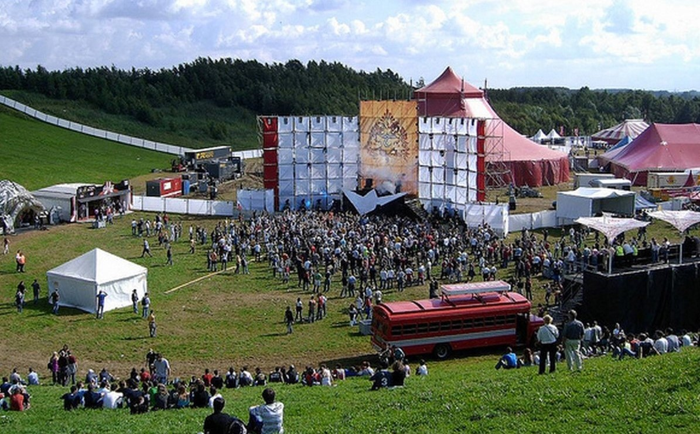
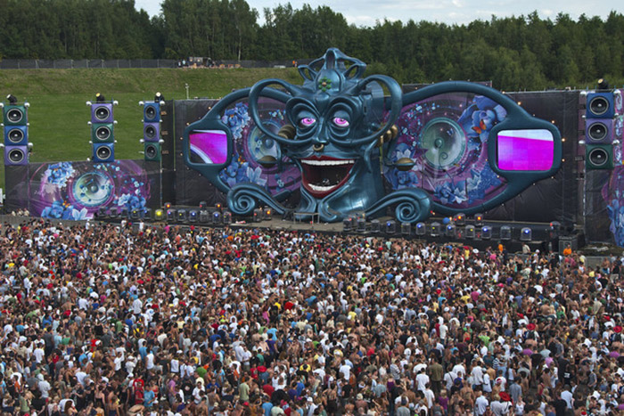
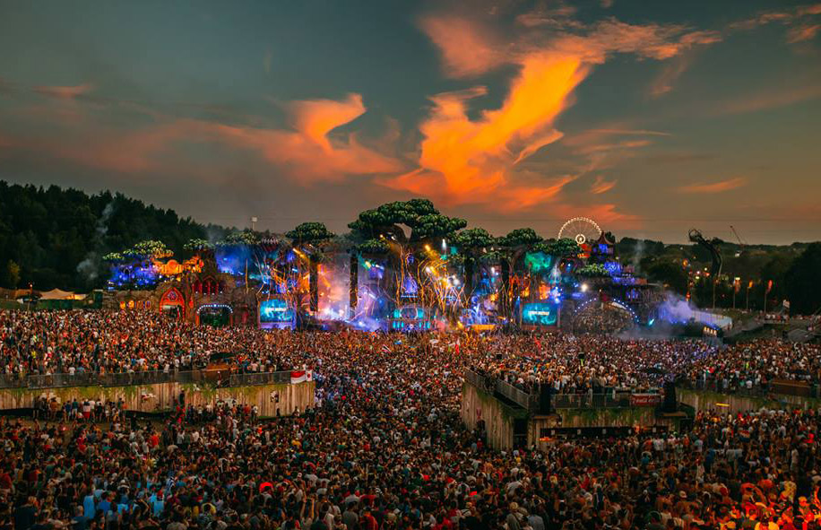
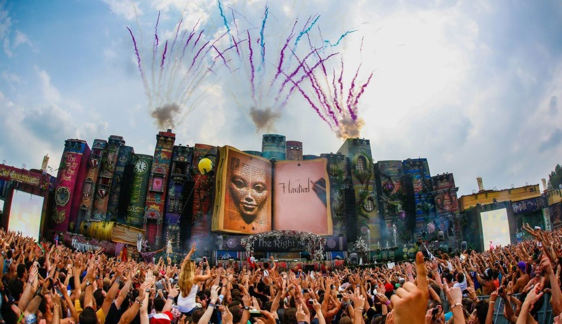
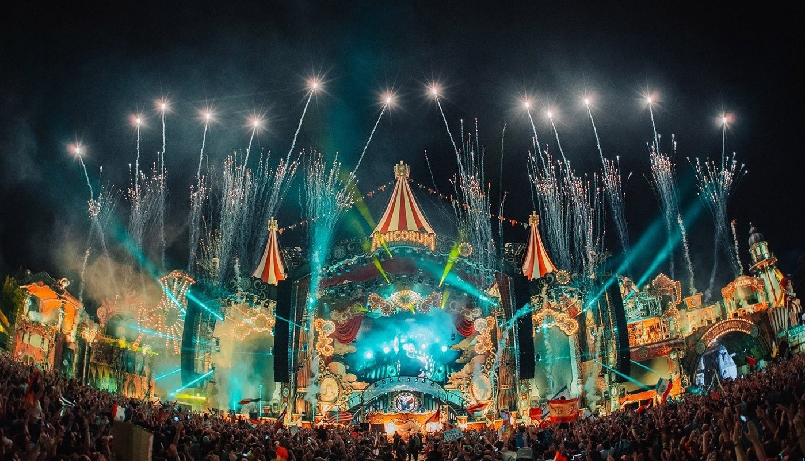

Tomorrowland 2005: the beginning.
The first edition of the festival took place in 2005 and attracted a crowd of about 10,000 people.

Masker (Mask).
The festival's flag features the Tomorrowland logo on a background, The festival logo features a butterfly, crown and an eye. The butterfly symbolises freedom, the beauty of nature, and the purity of the human soul. The crown symbolises equality and stewardship, where as the eye encourages people to look out for each other and appreciate nature's beauty. The four background colors represent the classical elements of nature – water, earth, fire, and air. For every flag bought, Tomorrowland donates €5 to the Tomorrowland Foundation,

The Tree of Life.
Tomorrowland is the world's largest dance music festival, each summer bringing electronic music's biggest stars to its magical wonderland in De Schorre park in Booma town between Brussels and Antwerp in northern Belgium.

The Book of Wisdom.
Probably the most well known aspect of the Tomorrowland brand is their unbelievable, out-of-this-world stage production. In relation to their annually changing theme, the festival has over 10 giant stages to house the insatiable 400-piece lineup. Some of the favourite previous stages include a giant circus extravaganza, the Rose Garden Stage which featured a giant mechanical dragon's head and the immersive underwater experience created with a giant, golden seahorse centre stage.

The Elixir of Life.
With a lineup that features hundreds of artists, Tomorrowland consistently curates a selection of the best DJs in the dance music field. Many favourites have performed at Tomorrowland over the years with names like David Guetta, Armin van Buuren, Dimitri Vegas & Like Mike, Tiesto, Afrojack, Adam Beyer and Carl Cox among them.

Amicorum Spectaculum.
Tomorrowland's Dreamville currently has seven camping areas ahead of the 2021 event. The camping options range from the Magnificent Greens Area which houses basic campers to the Terra Soils Area which is their most luxurious camping option featuring lockable suites. Tomorrowland also offers mansion packages where guests stay in a privately rented mansion in the local countryside, and hotel packages where guests can stay in a variety of Brussels hotels.